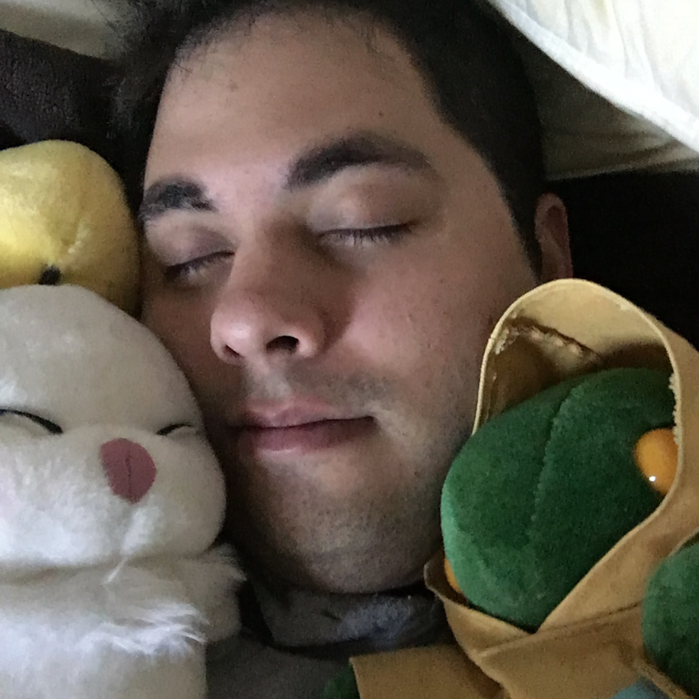

The 5 Horsemen
Cody Sauer
Roles: Designer, Writer, Programmer
Bio: UCI Sr. Majoring in Computer Science. Long-time gamer and part-time Dungeon Master. Enjoys C++, sleeping and swimming.
Daniel Thompson
Roles:Game Developer, Artist
Bio:Dan is a UCI Senior Majoring in Computer Science. He started developing games for fun by coding a Tetris clone and a Pong clone in C++ and SDL. After building a game engine using the same languages, he honed his art skills with gimp. He enjoys Linux, overly complicated board games, and weightlifting.
Daniel Tromberg
Roles:Artist, Editor
Bio:UCI Senior majoring in Informatics. He specializes in Human Computer Interaction.
Kyle San Clemente
Roles: Producer, Web Developer
Bio: UCI Sr. Majoring in Software Engineering, and Project Manager for Oomba Inc. Enjoys Linux and Vim, and backpacking.
Raj Parpani
Roles:
Bio: I am currently pursuing a Bachelor’s degree in Informatics with specialization in HCI [HUMAN COMPUTER INTERACTION] from the University of California, Irvine. Completing this game project allows me to add extra bits of creative work to my portfolio. Acquiring the opportunity to be a part of the game development class has helped me not only get some knowledge about the programming aspect of making games but as well as the general principles to be looked for in terms of writing a storyline for the game.. My passion for gaming gave me a strong desire to learn all the new tools I needed to learn for creating this game with my group..I was able to demonstrate some creative ideas in terms of art while making assets from a top down perspective. My extensive experience working on so many projects throughout the program helped me keep myself in pace with the agile process followed for our project really well. I hope you’d like the game our team created for your game development class.